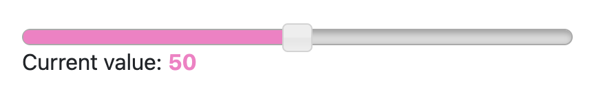
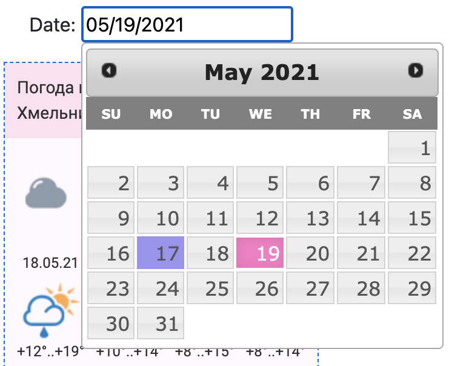
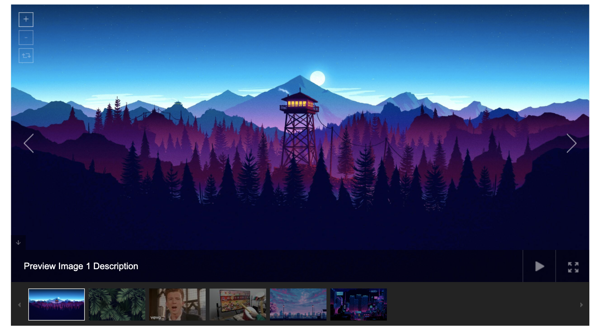
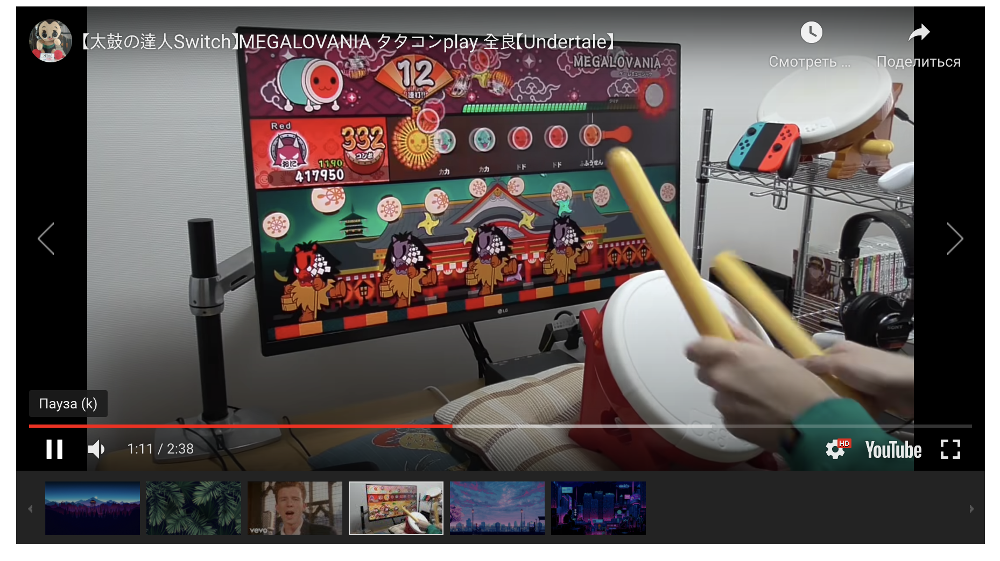
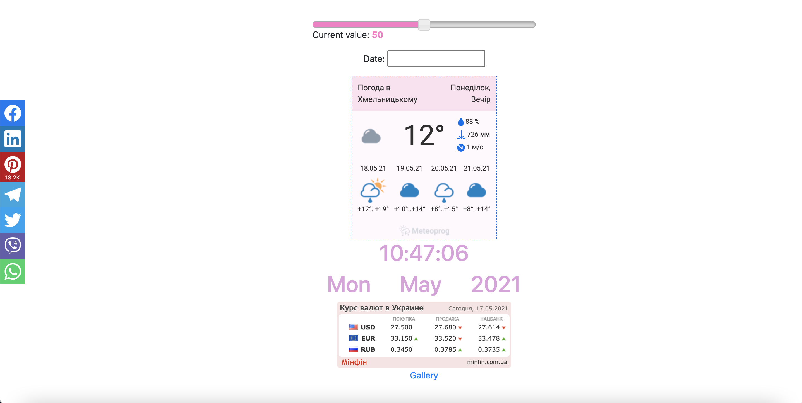
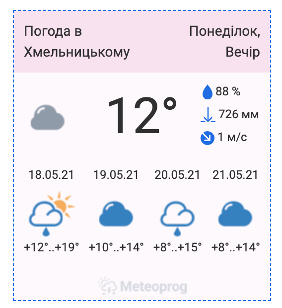
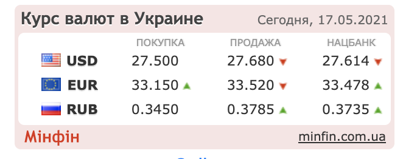
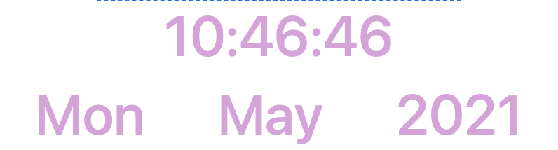
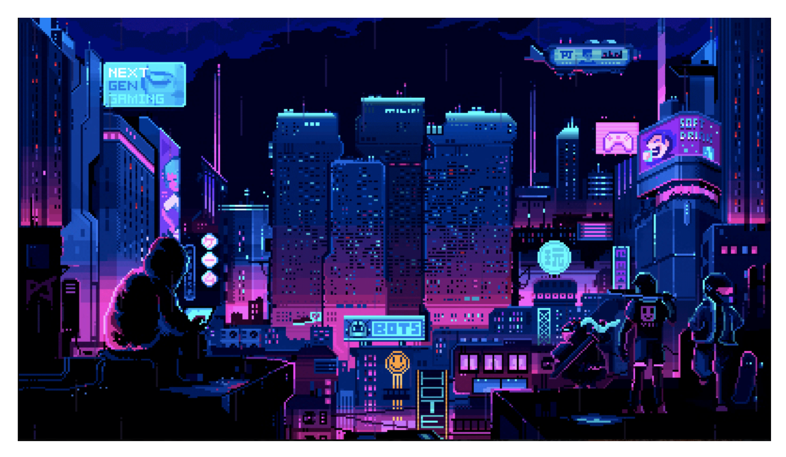
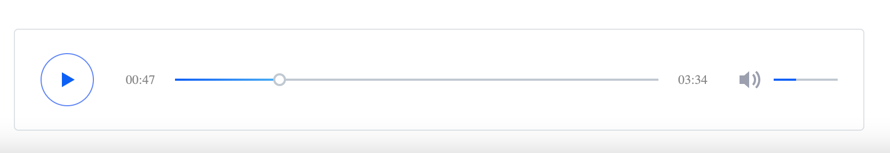

Тема та постановка задачі лабораторної роботи №6
Тема: ВИКОРИСТАННЯ В СЦЕНАРІЯХ JAVASCRIPT БІБЛІОТЕК КРОС-БРАУЗЕРНИХ ІНТЕРФЕЙСІВ МЕТОДІВ DOM. БІБЛІОТЕКА
JQUERY UI.
ЗАСОБИ НАЛАГОДЖЕННЯ І ТЕСТУВАННЯ СЦЕНАРІЇВ JAVASCRIPT.
Мета: придбати практичні навички роботи jQuery UI, вміти додавати до сайту динамічні елементи цієї
бібіліотеки, плагін галереї UniteGallery, кнопки соціальних мереж, інформери та інше.
Результат роботи розміщено за посиланням
Код розміщено за посиланням
- Користуючись документацією бібліотеки https://jqueryui.com/ додати до сайту (або до окремої сторінки)
2-3 динамічних елементи
- Додати до сайту (або до окремої сторінки) плагін галереї UniteGallery
- Додати до сайту (або до окремої сторінки) кнопки соціальних мереж
- Додати сайту (або до окремої на сторінці) інформери
- Додати сайту (або до окремої на сторінці) один (або більше) із модулів jQuery для мультимедіа
(зображення і відео).
Динамічні елементи
Я обрала для реалізації елемент slider та datePicker

<div id="slider-block">
<div style="width: 400px" id="slider"></div>
<p>Current value: <span style="color: rgb(253, 121, 198); font-weight: bold;" id="result-slider"></span>
</p>
</div>
$("#slider").slider({
animate: "slow",
range: "min",
value: 50,
slide: function (event, ui) {
$("#result-slider").text(ui.value);
}
});

<div id="datepickers">
<p>Date: <input id="datepicker2"> </p>
</div>
$("#datepicker2").datepicker({
showAnim: "slideDown"
});
Плагін UniteGallery
За допомогою плагіну UniteGallery я змогла реалізувати карусель-фотогалерею, у якій можна збільшувати
зображення, переглядати їх у повноекранному режимі, а також є можливість перегляду відео.



<div id="gallery" style="display: none; width: 100%; height: auto;">
<img alt="Preview Image 1"
src="https://i.pinimg.com/originals/35/82/21/358221b85dc0c666cbd6bf4961a260db.jpg"
data-image="https://i.pinimg.com/originals/35/82/21/358221b85dc0c666cbd6bf4961a260db.jpg"
data-description="Preview Image 1 Description">
<img alt="Preview Image 2"
src="https://cdn.hovia.com/app/uploads/Green-Tropical-Plant-Wallpaper-Mural-Plain.jpg"
data-image="https://cdn.hovia.com/app/uploads/Green-Tropical-Plant-Wallpaper-Mural-Plain.jpg"
data-description="Preview Image 2 Description">
<img alt="Youtube Video" data-type="youtube" data-videoid="dQw4w9WgXcQ"
data-description="You can include youtube videos easily!">
<img data-type="youtube" data-videoid="f7Yimxud4UI"
data-description="You can include youtube videos easily!">
<img alt="Preview Image 3"
src="https://i.pinimg.com/originals/6a/8b/50/6a8b50ac0aa0e64f224bcee2f0afbd66.jpg"
data-image="https://i.pinimg.com/originals/6a/8b/50/6a8b50ac0aa0e64f224bcee2f0afbd66.jpg"
data-description="Preview Image 3 Description">
<img alt="Preview Image 3"
src="https://cdnb.artstation.com/p/assets/images/images/024/538/827/original/pixel-jeff-clipa-s.gif?1582740711"
data-image="https://cdnb.artstation.com/p/assets/images/images/024/538/827/original/pixel-jeff-clipa-s.gif?1582740711"
data-description="Preview Image 3 Description">
</div>
jQuery(document).ready(function () {
jQuery("#gallery").unitegallery();
});
Кнопки соціальних мереж
Для розміщення кнопок соціальних мереж я скористалась плагіном
jQuery-Plugin-For-Horizontal-Floating-Social-Share-Bar. Він дозволяє створити привабливу фіксовану панель
для поширення інформації через соціальні мережі.

$("body").floatingSocialShare({
buttons: [
"facebook", "linkedin", "pinterest", "telegram", "twitter", "viber", "whatsapp"
],
text: "share with: ",
url: "https://www.youtube.com/watch?v=dQw4w9WgXcQ&ab_channel=RickAstleyVEVO"
});
Інформери
За допомогою бібліотеки jQuery можна легко додати інформери, які динамічно змінюють інформацію згідно з часом
та місцерозташуванням користувача.
Погода

Курс валют

Годинник

Модулі для мультимедіа
Існує велика кількість готових модулів для інтеграції мультимедіа до сторінки
Для прикладу я обрала модуль giffy, який дозволяє програвати gif при наведенні на неї курсора.

<div id="gifPlayer" style="margin: 40px;">
<img src="https://cdnb.artstation.com/p/assets/images/images/024/538/827/original/pixel-jeff-clipa-s.gif?1582740711"
style="width: 60%;" data-cover="gif.png" id="giffy-img">
</div>
$('#giffy-img').giffy();
Також я використала модуль Clean-Audio-Player-jQuery для створення мінімалістичного, привабливого та інтерактивного програвача аудіо.

<div id="audioPlayer">
<audio preload="auto" controls>
<source src="rick-astley_never-gonna-give-you-up.mp3">
</audio>
</div>
$(function () {
$('audio').audioPlayer();
});
ВИСНОВКИ
И рамках даної лабараторної я придбала практичні навички роботи jQuery UI. Для засвоєння матеріалу лекцій я додала до сайту динамічні елементи
бібіліотеки jQuery, плагін галереї UniteGallery, кнопки соціальних мереж, інформери та інше.
Переваги
- Бібліотека є простою у використанні, лише кілька стрічок коду роблять сторінку анімованою та живою.
- Гнучкість за рухнок величезної кількості наявних плагінів
- Open Source продукт швидко розвивається та надає найкращі рішення
Недоліки
- Open Source продукт не має єдиного стандарту та сформованих практик.
- Наявність великої кількості версій, які не підтримуються по різному.
- Повільніше за CSS.